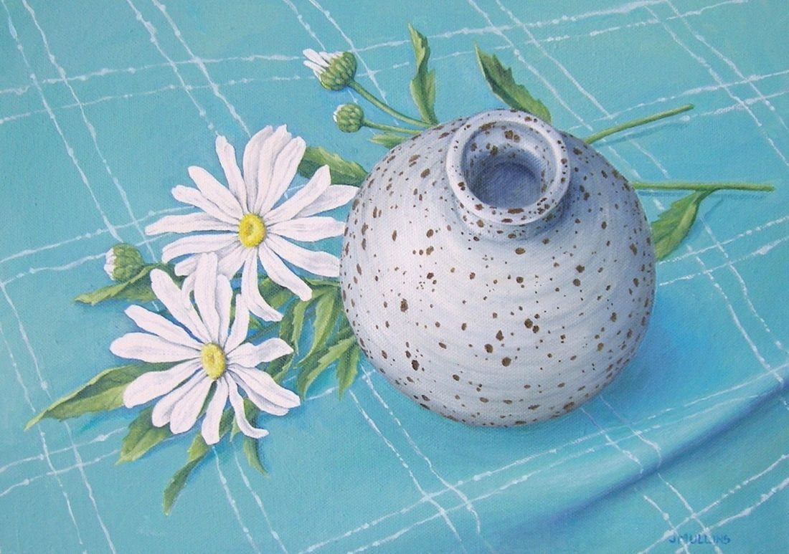

The Spotty Bowl
No. 19- Medium
- Oil on canvas board
- Size
- 26 × 36 cm
- Year
- 2012
- Price
- £200
I bought this little spotty bowl at an exhibition and enjoyed the challenge of painting its roundness. The flowers and cloth are a good background.
Ask about this paintingOr email enquiries@joanmullinsart.co.uk, quoting No. 19. UK only. Collection from Nantwich is free; UK postage is quoted when you enquire.

 Blue Jug and Orange
Blue Jug and Orange Stylised Still Life
Stylised Still Life